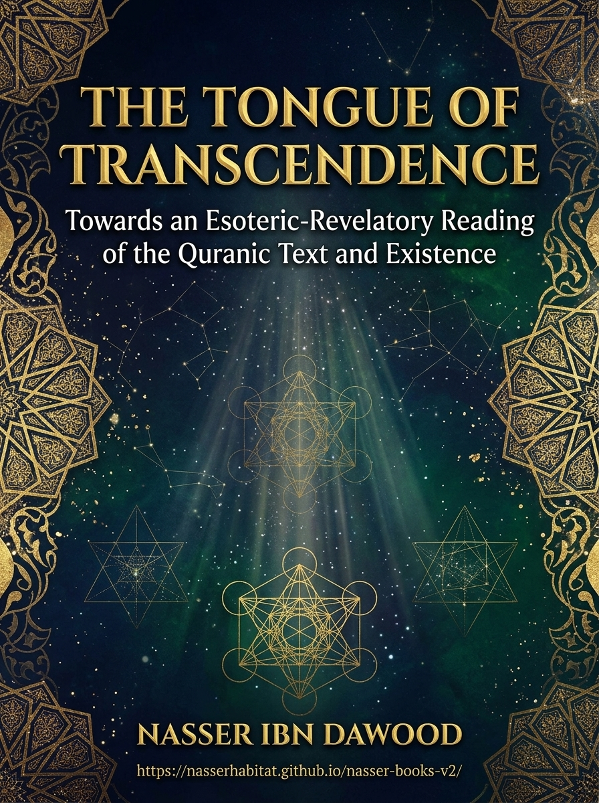

137. The Language of Transcendence — Lisan al-Tasami

An inquiry into unveiling interpretation, symbolism, and spiritual analysis, presenting the author’s reading of text, awareness, and existence.
Condensed conceptual adaptation; the Arabic work remains the primary source.
قراءة PDF داخل الموقع / Read the PDF on this website
جارٍ تجهيز القارئ… / Preparing the reader…
Book Summary, Table of Contents & Excerpt
THE LANGUAGE OF TRANSCENDENCE
Lisan al-Tasami
Toward an Inner, Unveiling Reading of the Qur’anic Text and Existence
A condensed conceptual adaptation of the Arabic work
Author: Nasser Ibn Dawood
English conceptual edition · 2026
Source: *Lisān al-Tasāmī: Naḥwa Qirāʾa Bāṭiniyya–Takāshufiyya lil-Naṣṣ al-Qurʾānī wa-l-Wujūd* (لسان التسامي: نحو قراءة باطنية-تكاشفية للنص القرآني والوجود).
Digital library: nasserhabitat.github.io/nasser-books/
I. The Global Knowledge Manifesto
Knowledge is a universal right. The author firmly believes that wisdom should not be locked behind paywalls or language barriers.
Global Access Policy: All books in this library are available for free in multiple digital formats (PDF, HTML, DOCX, TXT).
The Digital Library: As of early 2026, the collection hosts 236 volumes (118 in Arabic and 118 in English), fully optimized for AI-assisted research and digital archiving.
Official Platforms: Main Website: nasserhabitat.github.io/nasser-books/
GitHub: nasserhabitat/nasser-books
This manifesto is reproduced here as supplied by the author for this condensed edition.
II. Translator’s Note: The Bridge of Meaning
This English edition is a condensed conceptual adaptation. It is not a word-for-word translation, but rather an "extraction of essence." It presents the core philosophical framework in accessible English, omitting the exhaustive linguistic debates and classical references found in the original Arabic text.
For the academic researcher: The original Arabic version remains the primary source for comprehensive linguistic analysis, detailed exegesis (Tafsir), and the complete bibliography.
This adaptation also preserves the methodological status of the Arabic edition. A claim marked OPEN remains open; a CANDIDATE remains a candidate; a RESISTED or STRONGLY RESISTED claim is not revived through simplification; and a CLOSED result remains closed only within its declared scope. The aim is clarity without scientific inflation.
Key Qur’anic terms are sometimes retained in transliteration—such as nafs, tawaffī, barzakh, and baʿth—when a single English equivalent would prematurely narrow the field under study.
Editorial note on this edition
The original moves deliberately between vivid spiritual language and the stricter terminology of textual research. This adaptation retains both registers, while marking their difference. A Qur’anic statement, an interpretive inference, a linguistic hypothesis, and an ethical exercise do not possess the same evidentiary status. Words such as symbol, climate, ascent, and code describe the author’s proposed reading; they do not automatically replace the text’s historical, material, legal, or eschatological dimensions. References are generally given by sūrah name and verse, and translated verse fragments are conceptual renderings rather than a designated published translation.
Contents
Introduction — A book that changes its reader
1. The conceptual vocabulary of transcendence
2. Paradise, fire, and the relationship between present life and final outcome
3. The Qur’anic language and a disciplined practice of unveiling
4. Cosmic and psychological symbols: five readings
5. The journey of liberation, migration, and the Divine Names
6. The ethics of interpretation and the fivefold testing protocol
7. Worked reading: Sūrat al-Ḍuḥā and Sūrat al-Sharḥ
Conclusion — The open work of understanding
Appendix A — Glossary of essential terms
Appendix B — Research map and selected primary references
Introduction — A Book That Changes Its Reader
The opening claim of Lisan al-Tasami is that a crisis of reading can persist even in a culture rich in sacred texts. Words may be repeated and inherited interpretations may be memorized, while the relationship between the reader, truth, ethical conduct, and the world remains unchanged. The book therefore asks a demanding question: what would it mean to read the Qur’an as a living address that reveals the reader to himself or herself, rather than only as material to recite, classify, or defend?
The author calls the intended movement tasāmī, or transcendence: a passage from constricted perception to a wider, more accountable mode of understanding. Its opposite is termed ibāʾiyya, a form of inherited interpretive closure. The contrast is not between the Qur’an and all tradition, nor between spirit and the outward text. It is between a reading that treats any inherited human explanation as final and a reading that is ready to examine language, compare verses, identify the limits of a claim, and amend its conclusions.
This project belongs to the author’s wider approach, Fiqh al-Lisān al-Qurʾānī (the study of the Qur’anic language as an organized field of meaning). It works with semantic roots, the recurring use of Qur’anic expressions, contextual relationships, an exploratory theory of interlocking letter-pairs (mathānī), and the QCROS sequence of observation, induction, hypothesis, testing, and status assignment. None of these steps gives the interpreter permission to overrule an explicit verse. The more creative the proposal, the greater the obligation to show where it begins to move beyond textual observation.
The book invites two complementary kinds of reading. The first asks what the passage itself establishes: who acts, what is described, which verbs and qualifiers occur, and how similar terms appear elsewhere. The second asks what the passage may disclose about human experience: self-deception, moral attention, intellectual growth, the fear of correction, and the possibility of renewal. The author’s distinctive argument is that these two questions need not compete, provided that the second is not falsely presented as the direct and exhaustive meaning of the first.